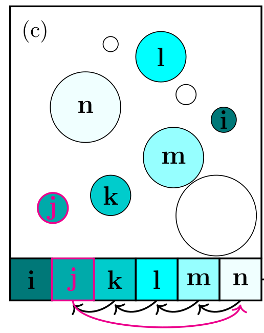
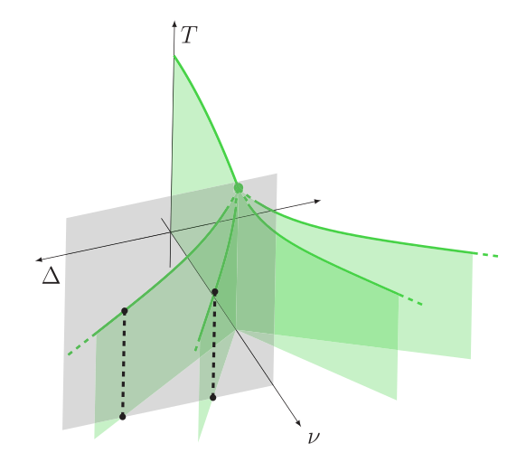
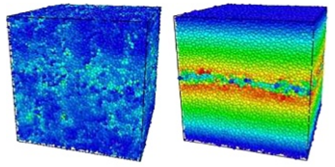
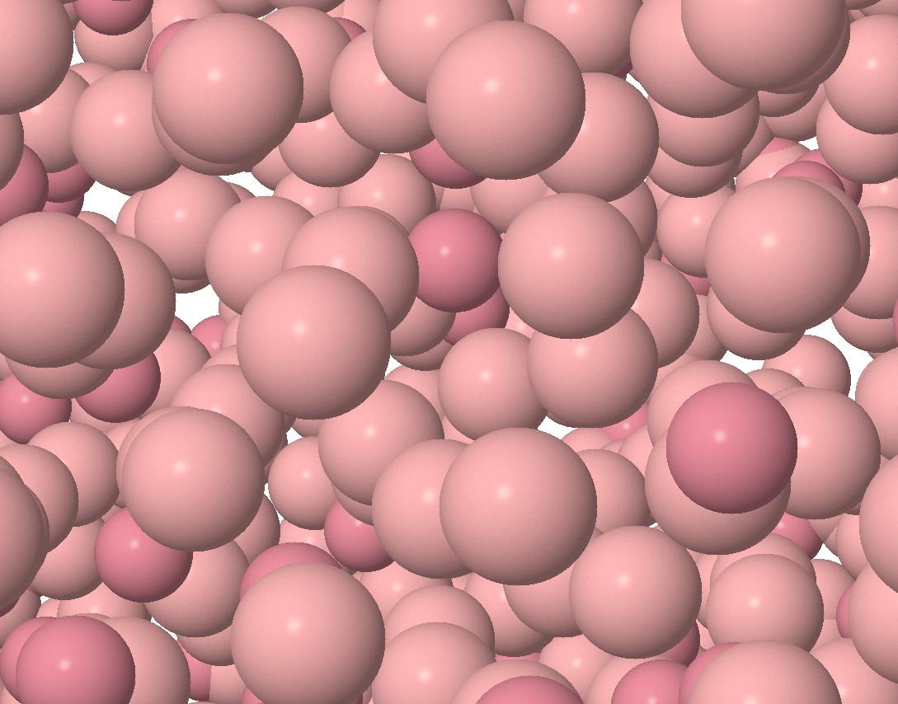
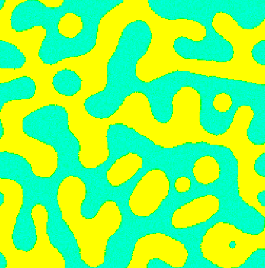

228 - Y. Nishikawa, F. Ghimenti, L. Berthier, and F. van Wijland
Irreversible swap algorithms for soft sphere glasses
arXiv:2501.09932
227 - M. E. Tracy, B. J. Kasting, C. Herrero, L. Berthier, R. Richert, A. Guiseppi-Elie, and M. D. Ediger
Initial Stages of Rejuvenation of Vapor-Deposited Glasses during Isothermal Annealing: Contrast Between Experiment and Simulation
J. Chem. Phys. 161, 224504 (2024)
226 - F. Ghimenti, L. Berthier, J. Kurchan, and F. van Wijland
What do clever algorithms for glasses do? Time reparametrization at work
arXiv:2409.17121
225 - K. Shiraishi and L. Berthier
Characterising the slow dynamics of the swap Monte Carlo algorithm
J. Phys. Chem. B 128, 12279 (2024)
224 - L. Berthier, F. Ghimenti, and F. van Wijland
Monte Carlo simulations of glass-forming liquids beyond Metropolis
J. Chem. Phys. 161, 114105 (2024)
223 - F. Ghimenti, L. Berthier, G. Szamel, and F. van Wijland
Irreversible Boltzmann samplers in dense liquids: weak-coupling approximation and mode-coupling theory
Phys. Rev. E 110, 034604 (2024)
222 - G. Jung, G. Biroli, and L. Berthier
Normalizing flows as an enhanced sampling method for atomistic supercooled liquids
Mach. Learn.: Sci. Technol. 5, 035053 (2024)
221 - F. Ghimenti, L. Berthier, G. Szamel, and F. van Wijland
Transverse forces and glassy liquids in infinite dimensions
Phys. Rev. E 109 064133 (2024)
220 - F. Ghimenti, L. Berthier, and F. van Wijland
Irreversible Monte Carlo algorithms for hard disk glasses: from event-chain to collective swaps
Phys. Rev. Lett. 133, 028202 (2024)

219 - L. Berthier, G. Biroli, M. L. Manning, and F. Zamponi
Yielding and plasticity in amorphous solids
arXiv:2401.09385
218 - T. Divoux, E. Agoritsas, S. Aime, C. Barentin, J.-L. Barrat, R. Benzi, L. Berthier, D. Bi, G. Biroli, D. Bonn, P. Bourrianne,
M. Bouzid, E. Del Gado, H. Delanoë-Ayari, K. Farain, S. Fielding, M. Fuchs, J. van der Gucht, S. Henkes, M. Jalaal, Y. M. Joshi,
A. Lemaître, R. L. Leheny, S. Manneville, K. Martens, W. C. K. Poon, M. Popović, I. Procaccia, L. Ramos, J. A. Richards, S. Rogers,
S. Rossi, M. Sbragaglia, G. Tarjus, F. Toschi, V. Trappe, J. Vermant, M. Wyart, F. Zamponi, and D. Zare
Ductile-to-brittle transition and yielding in soft amorphous materials: perspectives and open questions
Soft Matter 20, 6868 (2024)
217 - G. Jung, R. M. Alkemade, V. Bapst, D. Coslovich, L. Filion, F. P. Landes, A. Liu,
F. S. Pezzicoli, H. Shiba, G. Volpe, F. Zamponi, L. Berthier, and G. Biroli
Roadmap on machine learning glassy liquids
Nat. Rev. Phys. (in press), arXiv:2311.14752
216 - G. Jung, G. Biroli, and L. Berthier
Dynamic heterogeneity at the experimental glass transition predicted by transferable machine learning
Phys. Rev. B 109, 064205 (2024)

215 - C. Herrero and L. Berthier
Direct numerical analysis of dynamic facilitation in glass-forming liquids
Phys. Rev. Lett. 132, 258201 (2024)
214 - Y. Nishikawa and L. Berthier
Collective relaxation dynamics in a three-dimensional lattice glass model
Phys. Rev. Lett. 132, 067101 (2024)
213 - F. Ghimenti, L. Berthier, G. Szamel, F. van Wijland
Sampling efficiency of transverse forces in dense liquids
Phys. Rev. Lett. 131, 257101 (2023)
212 - Y.-E. Keta, J. Klamser, R. L. Jack, and L. Berthier
Emerging mesoscale flows and chaotic advection in dense active matter
Phys. Rev. Lett. 132, 218301 (2024)
211 - C. Herrero, M. D. Ediger, and L. Berthier
Front propagation in ultrastable glasses is dynamically heterogeneous
J. Chem. Phys. 159, 114504 (2023)

210 - L. Galliano, M. E. Cates, and L. Berthier
Two-dimensional crystals far from equilibrium
Phys. Rev. Lett. 131, 047101 (2023)
209 - Y.-E. Keta, R. Mandal, P. Sollich, R. L. Jack, and L. Berthier
Intermittent relaxation and avalanches in extremely persistent active matter
Soft Matter 19, 3871 (2023)
208 - S. Ciarella, D. Khomenko, L. Berthier, F. C. Mocanu, D. R. Reichman, C. Scalliet, and F. Zamponi
Finding defects in glasses through machine learning
Nat. Commun. 14, 4229 (2023)
207 - G. Jung, G. Biroli, and L. Berthier
Predicting dynamic heterogeneity in glass-forming liquids by physics-informed machine learning
Phys. Rev. Lett. 130, 238202 (2023)
206 - L. Berthier, E. Flenner, and G. Szamel
Are supercooled liquids Fickian yet non Gaussian?
Phys. Rev. Lett. 131, 119801 (2023)
205 - C. Herrero, C. Scalliet, M. D. Ediger, and L. Berthier
Two-step devitrification of ultrastable glasses
Proc. Natl. Acad. Sci USA 120, e2220824120 (2023)
204 - Q. Liao, L. Berthier, H.-J. Zhou, and N. Xu
Dynamic Gardner crossover in a simple structural glass
Proc. Natl. Acad. Sci USA 120, e2218218120 (2023)
203 - F. C. Mocanu, L. Berthier, S. Ciarella, D. Khomenko, D. R. Reichman, C. Scalliet, and F. Zamponi
Microscopic observation of two-level systems in a metallic glass model
J. Chem. Phys. 158, 014501 (2023)
202 - L. Berthier and D. R. Reichman
Modern computational studies of the glass transition
Nat. Rev. Phys. 5, 102 (2023)

201 - B. Guiselin, G. Tarjus, and L. Berthier
Is glass a state of matter?
Phys. Chem. Glasses 63, 136 (2022)
200 - C. Scalliet, B. Guiselin, and L. Berthier
Thirty milliseconds in the life of a supercooled liquid
Phys. Rev. X 12, 041028 (2022)
199 - J.-L. Barrat and L. Berthier
Computer simulations of the glass transition and glassy materials
Comptes Rendus. Physique (2023)
198 - Y. Nishikawa, A. Ikeda, and L. Berthier
Collective dynamics in a glass-former with Mari-Kurchan interactions
J. Chem. Phys. 156, 244503 (2022)
197 - B. Guiselin and L. Berthier
Le verre est-il une phase de la matière ?
Reflets de la Physique 74, 28 (2022)
196 - C. Scalliet and L. Berthier
A la recherche du verre idéal
Pour la science 534, 65 (April 2022)

195 - V. Raban, L. Berthier, and P. C. W. Holdsworth
Violation of the fluctuation-dissipation theorem and effective temperatures in spin ice
Phys. Rev. B 105, 134431 (2022)
194 - B. Guiselin, G. Tarjus, and L. Berthier
Static self-induced heterogeneity in glass-forming liquids: Overlap as a microscope
J. Chem. Phys. 156, 194503 (2022)
193 - Y.-E. Keta, R. L. Jack, and L. Berthier
Disordered collective motion in dense assemblies of persistent particles
Phys. Rev. Lett. 129, 048002 (2022)
192 - J. X. Tian and L. Berthier
Determination of pairwise interactions via the radial distribution function in equilibrium systems interacting with the Mie potential
Results Phys. 52, 106782 (2023)
191 - C. Scalliet, B. Guiselin, and L. Berthier
Excess wings and asymmetric relaxation spectra in a facilitated trap model
J. Chem. Phys. 155, 064505 (2021)
190 - Y. Nishikawa, M. Ozawa, A. Ikeda, P. Chaudhuri, and L. Berthier
Relaxation dynamics in the energy landscape of glass-forming liquids
Phys. Rev. X 12, 021001 (2022)

189 - B. Guiselin, L. Berthier, and G. Tarjus
Statistical mechanics of coupled supercooled liquids in finite dimensions
Scipost 12, 091 (2022)
188 - B. Guiselin, C. Scalliet, and L. Berthier
Microscopic origin of excess wings in relaxation spectra of deeply supercooled liquids
Nature Phys. 18, 468 (2022)
187 - M. Ozawa, L. Berthier, G. Biroli, and G. Tarjus
Rare events and disorder control the brittle yielding of amorphous solids
Phys. Rev. Res. 4, 023227 (2022)
186 - L. Berthier
Self-induced heterogeneity in deeply supercooled liquids
Phys. Rev. Lett. 127, 088002 (2021)
185 - C. J. Fullerton and L. Berthier
Glassy behaviour of sticky spheres: What lies beyond experimental timescales?
Phys. Rev. Lett. 125, 258004 (2020)
184 - Y. Nishikawa, A. Ikeda, and L. Berthier
Relaxation dynamics of non-Brownian spheres below jamming
J. Stat. Phys. 182, 37 (2021)
183 - B. Guiselin, G. Tarjus, and L. Berthier
On the overlap between configurations in glassy liquids
J. Chem. Phys. 153, 224502 (2020)
182 - A. D. S. Parmar, B. Guiselin, and L. Berthier
Stable glassy configurations of the Kob-Andersen model using swap Monte Carlo
J. Chem. Phys. 153, 134505 (2020)
181 - F. Arceri, F. P. Landes, L. Berthier, and G. Biroli
Glasses and aging: A Statistical Mechanics Perspective
In: Meyers R.A. (eds) Encyclopedia of Complexity and Systems Science. Springer, Berlin, Heidelberg (2022)
180 - L. Berthier and M. D. Ediger
How to measure a structural relaxation time that is too long to be measured?
J. Chem. Phys. 153, 044501 (2020)
179 - B. Guiselin, L. Berthier, and G. Tarjus
Random-field Ising model criticality in a glass-forming liquid
Phys. Rev. E 102, 042129 (2020)
178 - D. Richard, M. Ozawa, S. Patinet, E. Stanifer, B. Shang, S. A. Ridout, B. Xu, G. Zhang, P. K. Morse, J.-L. Barrat, L. Berthier, M. L. Falk, P. Guan, A. J. Liu, K. Martens, S. Sastry, D. Vandembroucq, E. Lerner, and M. L. Manning
Predicting plasticity in disordered solids from structural indicators
Phys. Rev. Mater. 4, 113609 (2020)
177 - A. D. S. Parmar, M. Ozawa, and L. Berthier
Ultrastable metallic glasses in silico
Phys. Rev. Lett. 125, 085505 (2020)
176 - E. Tjhung and L. Berthier
Analogies between growing dense active matter and soft driven glasses
Phys. Rev. Res. 2, 043334 (2020)
175 - L. Berthier, P. Charbonneau, and J. Kundu
Finite-dimensional vestige of spinodal criticality above the dynamical glass transition
Phys. Rev. Lett. 125, 108001 (2020)
174 - M. Singh, M. Ozawa, and L. Berthier
Brittle yielding of amorphous solids at finite shear rates
Phys. Rev. Mater. 4, 025603 (2020)
173 - M. Ozawa, L. Berthier, G. Biroli, and G. Tarjus
The role of fluctuations on the yielding transition of two-dimensional glasses
Phys. Rev. Res. 2, 023203 (2020)
172 - W. Yeh, M. Ozawa, K. Miyazaki, T. Kawasaki, and L. Berthier
Glass stability changes the nature of yielding under oscillatory shear
Phys. Rev. Lett. 124, 225502 (2020)
171 - D. Khomenko, C. Scalliet, L. Berthier, D. R. Reichman, and F. Zamponi
Depletion of two-level systems in ultrastable computer-generated glasses
Phys. Rev. Lett. 124, 225901 (2020)
170 - M. Shimada, H. Mizuno, L. Berthier, and A. Ikeda
Low-frequency vibrations of jammed packings in large spatial dimensions
Phys. Rev. E 101, 052906 (2020)
169 - C. Scalliet, L. Berthier, and F. Zamponi
Nature of excitations and defects in structural glasses
Nat. Commun. 10, 5102 (2019)
168 - L. Berthier and J. Kurchan
Lectures on non-equilibrium active systems
arXiv.1906.04039
167 - M. Ozawa, C. Scalliet, A. Ninarello, and L. Berthier
Does the Adam-Gibbs relation hold in simulated supercooled liquids?
J. Chem. Phys. 151, 084504 (2019)
166 - A. Ikeda, T. Kawasaki, L. Berthier, K. Saitoh, and T. Hatano
Universal relaxation dynamics of sphere packings below jamming
Phys. Rev. Lett. 124, 058001 (2020)
165 - E. Flenner, L. Berthier, P. Charbonneau, and C. J. Fullerton
Front-mediated melting of ultrastable glasses
Phys. Rev. Lett. 123, 175501 (2019)

164 - V. Raban, C. T. Suen, L. Berthier, and P. C. W. Holdsworth
The multiple symmetry sustaining phase transitions of spin ice
Phys. Rev. B 99, 224425 (2019)

163 - L. Berthier, G. Biroli, P. Charbonneau, E. I. Corwin, S. Franz, and F. Zamponi
Perspective: Gardner physics in amorphous solids and beyond
J. Chem. Phys. 151, 010901 (2019)
162 - L. Berthier, E. Flenner, and G. Szamel
Perspective: Glassy dynamics in dense systems of active particles
J. Chem. Phys. 150, 200901 (2019)
161 - C. Scalliet and L. Berthier
Rejuvenation and memory effects in a structural glass
Phys. Rev. Lett. 122, 255502 (2019)
160 - L. Berthier, M. Ozawa, and C. Scalliet
Perspective: Configurational entropy of glass-forming liquids
J. Chem. Phys. 150, 160902 (2019)
159 - L. Wang, L. Berthier, E. Flenner, P. Guan, and G. Szamel
Sound attenuation in stable glasses
Soft Matter 15, 7018 (2019)
158 - L. Berthier, E. Flenner, C. J. Fullerton, C. Scalliet, and M. Singh
Efficient swap algorithms for molecular dynamics simulations of equilibrium supercooled liquids
J. Stat. Mech. 064004 (2019)
157 - D. Coslovich, A. Ninarello, and L. Berthier
The mode-coupling crossover of glasses is a localization transition
Scipost 7, 077 (2019)
156 - Q. Liao and L. Berthier
Hierarchical landscape of hard disk glasses
Phys. Rev. X 9, 011049 (2019)
155 - L. Berthier, P. Charbonneau, and J. Kundu
Bypassing sluggishness: SWAP algorithm and glassiness in high dimensions
Phys. Rev. E 99, 031301 (2019)
154 - C. Scalliet, L. Berthier, and F. Zamponi
Marginally stable phases in mean-field structural glasses
Phys. Rev. E 99, 012107 (2019)
153 - L. Berthier, G. Biroli, J.-P. Bouchaud, and G. Tarjus
Can the glass transition be explained without a growing static length scale?
J. Chem. Phys. 150, 094501 (2019)
152 - L. Berthier, P. Charbonneau, A. Ninarello, M. Ozawa, and S. Yaida
Zero-temperature glass transition in two dimensions
Nat. Commun. 10, 1508 (2019)
151 - M. Ozawa, G. Parisi, and L. Berthier
Configurational entropy of polydisperse supercooled liquids
J. Chem. Phys. 149, 154501 (2018)
150 - L. Wang, A. Ninarello, P. Guan, L. Berthier, G. Szamel, and E. Flenner
Low-frequency vibrational modes of stable glasses
Nat. Commun. 10, 26 (2019)

149 - T. Kawasaki and L. Berthier
Discontinuous shear-thickening in Brownian suspensions
Phys. Rev. E 98, 012609 (2018)
148 - M. Ozawa, L. Berthier, G. Biroli, A. Rosso, and G. Tarjus
A random critical point separates brittle and ductile yielding transitions in amorphous materials
Proc. Natl. Acad. Sci. USA. 115, 6656 (2018)

147 - D. Coslovich, M. Ozawa, and L. Berthier
Local order and crystallization of dense polydisperse hard spheres
J. Phys.: Condens. Matter 30, 144004 (2018)
146 - A.-M. Philippe, D. Truzzolillo, J. Galvan-Myoshi, P. Dieudonne-George, V. Trappe, L. Berthier, and L. Cipelletti
The glass transition of soft colloids
Phys. Rev. E 97, 040601 (2018)
145 - L. Berthier, E. Flenner, and G. Szamel
How active forces influence nonequilibrium glass transitions
New J. Phys. 19, 125006 (2017)
144 - C. F. Fullerton and L. Berthier
Density controls the kinetic stability of ultrastable glasses
EPL 119, 36003 (2017)
143 - C. Scalliet, L. Berthier, and F. Zamponi
Absence of marginal stability in a structural glass
Phys. Rev. Lett. 119, 205501 (2017)
142 - L. Berthier, P. Charbonneau, E. Flenner, and F. Zamponi
Origin of ultrastability in vapor-deposited glasses
Phys. Rev. Lett. 119, 188002 (2017)
141 - M. Ozawa, L. Berthier, and D. Coslovich
Exploring the jamming transition over a wide range of critical densities
Scipost 3, 027 (2017)
140 - A. Ninarello, L. Berthier, and D. Coslovich
Models and algorithms for the next generation of glass transition studies
Phys. Rev. X 7, 021039 (2017)
139 - L. Berthier, P. Charbonneau, D. Coslovich, A. Ninarello, M. Ozawa, and
S. Yaida
Configurational entropy measurements in extremely
supercooled liquids that break the glass ceiling
Proc. Natl. Acad. Sci USA 114, 11356 (2017)
138 - A. Ikeda, L. Berthier, and G. Parisi
Large-scale structure of randomly jammed particles
Phys. Rev. E 95, 052125 (2017)
137 - M. Ozawa and L. Berthier
Does the configurational entropy of polydisperse particles exist?
J. Chem. Phys. 146, 014502 (2017)
136 - R. L. Jack and L. Berthier
Note: Physical mechanisms for the bulk melting of stable glasses
J. Chem. Phys. 145, 076101 (2016)
135 - E. Tjhung and L. Berthier
Discontinuous fluidization transition in time-correlated assemblies of actively deforming particles
Phys. Rev. E 96, 050601(R) (2017)
134 - E. Flenner, G. Szamel, and L. Berthier
The nonequilibrium glassy dynamics of self-propelled particles
Soft Matter 12, 7136 (2016)
133 - P. Chaudhuri and L. Berthier
Ultra-long-range dynamic correlations in a microscopic model for aging gels
Phys. Rev. E 95, 060601(R) (2017)
132 - L. Berthier, P. Charbonneau, and F. Zamponi
La théorie du verre
de plus en plus solide
La Recherche, Avril 2016, p. 68.
131 - R. L. Jack and L. Berthier
The melting of stable glasses is governed by nucleation-and-growth dynamics
J. Chem. Phys. 144, 244506 (2016)
130 - A. Ikeda, L. Berthier and P. Sollich
Comment on `Constant stress and pressure rheology of colloidal suspensions'
Phys. Rev. Lett. 116, 179801 (2016)
129 - L. Berthier and M. D. Ediger
Facets of glass physics
Physics Today 69, 40 (2016)
128 - A. Philippe, S. Aime, V. Roger, R. Jelinek, G. Prevot, L. Berthier, L. Cipelletti
An efficient scheme for sampling fast dynamics at a low average data acquisition rate
J. Phys.: Condens. Matter 28, 075201 (2016)
127 - L. Berthier, D. Coslovich, A. Ninarello, and M. Ozawa
Equilibrium sampling of hard spheres up to the jamming density and beyond
Phys. Rev. Lett. 116, 238002 (2016)
126 - L. Berthier, P. Charbonneau, Y. Jin, G. Parisi, B. Seoane, and F. Zamponi
Growing timescales and lengthscales characterizing vibrations of amorphous solids
Proc. Natl. Acad. Sci USA 113, 8397 (2016)
125 - S. Yaida, L. Berthier, P. Charbonneau, and G. Tarjus
Point-to-set lengths, local structure, and glassiness
Phys. Rev. E 94, 032605 (2016)
124 - E. Tjhung and L. Berthier
Criticality and correlated dynamics at the irreversibility transition in periodically driven colloidal suspensions
J. Stat. Mech. 033501 (2016)
123 - L. Berthier, P. Charbonneau, and S. Yaida
Efficient measurement of point-to-set correlations and overlap fluctuations in glass-forming liquids
J. Chem. Phys. 144, 024501 (2016)
122 - T. Kawasaki and L. Berthier
Macroscopic yielding in jammed solids is accompanied by a non-equilibrium first-order transition in particle trajectories
Phys. Rev. E 94, 022615 (2016)
121 - D. Levis and L. Berthier
From single-particle to collective effective temperatures in an active fluid of self-propelled particles
EPL 111, 60006 (2015)
120 - A. Ikeda and L. Berthier
Thermal fluctuations, mechanical response, and hyperuniformity in jammed solids
Phys. Rev. E 92, 012309 (2015)
119 - L. Berthier and R. L. Jack
Evidence for a disordered critical point in a glass-forming liquid
Phys. Rev. Lett. 114, 205701 (2015)

118 - A. Ninarello, L. Berthier, and D. Coslovich
Structure and dynamics of coupled viscous liquids
Mol. Physics 113, 2707 (2015)
117 - D. Bonn, M. M. Denn, L. Berthier, T. Divoux, and S. Manneville
Yield Stress Materials in Soft Condensed Matter
Rev. Mod. Phys. 89, 035005 (2017)
116 - P. Chaudhuri, P. I. Hurtado, L. Berthier, and W. Kob
Relaxation dynamics in a transient network fluid with competing gel and glass phases
J. Chem. Phys. 142, 174503 (2015)
115 - E. Tjhung and L. Berthier
Hyperuniform density fluctuations and diverging dynamic correlations in periodically driven colloidal suspensions
Phys. Rev. Lett. 114, 148301 (2015)
114 - G. Szamel, E. Flenner, and L. Berthier
Glassy dynamics of athermal self-propelled particles: Computer simulations and a nonequilibrium microscopic theory
Phys. Rev. E 91, 062304 (2015)
113 - F. Ginot, I. Theurkauff, D. Levis, C. Ybert, L. Bocquet, L. Berthier, and C. Cottin-Bizonne
Nonequilibrium equation of state in suspensions of active colloids
Phys. Rev. X 5, 011004 (2015)
112 - T. Kawasaki, D. Coslovich, A. Ikeda, and L. Berthier
Diverging viscosity and soft granular rheology in non-Brownian suspensions
Phys. Rev. E 91, 012203 (2015)
111 - G. M. Hocky, L. Berthier, and D. R. Reichman
Equilibrium ultrastable glasses produced by random pinning
J. Chem. Phys. 141, 224503 (2014)
110 - T. Kawasaki, A. Ikeda, and L. Berthier
Thinning or thickening? Multiple rheological regimes in dense suspensions of soft particles
EPL 107, 28009 (2014)
109 - D. Levis and L. Berthier
Clustering and heterogeneous dynamics in a kinetic Monte-Carlo model of self-propelled hard disks
Phys. Rev. E 89, 062301 (2014)
108 - G. M. Hocky, L. Berthier, W. Kob, and D. R. Reichman
Crossovers in the dynamics of supercooled liquids probed by an amorphous wall
Phys. Rev. E 89, 052311 (2014)
107 - L. Berthier and D. Coslovich
A novel approach to numerical measurements of the configurational entropy in supercooled liquids
Proc. Natl. Acad. Sci. USA 111, 11668 (2014)
106 - V. Testard, L. Berthier, and W. Kob
Intermittent dynamics and logarithmic domain growth during the spinodal decomposition of a glass-forming liquid
J. Chem. Phys. 140, 165402 (2014)
105 - A. Ikeda and L. Berthier
Yield stress in amorphous solids: A mode-coupling theory analysis
Phys. Rev. E 88, 052305 (2013)
104 - L. Berthier
Nonequilibrium glassy dynamics of self-propelled hard disks
Phys. Rev. Lett. 112, 220602 (2014)
103 - L. Berthier
Overlap fluctuations in glass-forming liquids
Phys. Rev. E 88, 022313 (2013)

102 - A. Ikeda, L. Berthier, and P. Sollich
Disentangling glass and jamming physics in the rheology of soft materials
Soft Matter 9, 7669 (2013)
101 - W. Kob and L. Berthier
Probing a liquid to glass transition in equilibrium
Phys. Rev. Lett. 110, 245702 (2013)
100 - L. Berthier and J. Kurchan
Nonequilibrium glass transitions in driven and active matter
Nature Phys. 9, 310 (2013)
99 - A. Ikeda, L. Berthier, and G. Biroli
Dynamic criticality at the jamming transition
J. Chem. Phys. 138, 12A507 (2013)
98 - W. Kob, S. Roldan-Vargas, and L. Berthier
Characterizing dynamic length scales in glass-forming liquids
Nature Phys. 8, 697 (2012)
97 - W. Kob, S. Roldan-Vargas, and L. Berthier
Spatial correlations in glass-forming liquids across the mode-coupling crossover
Physics Procedia 34, 70 (2012)
96 - L. Berthier, G. Biroli, D. Coslovich, W. Kob, and C. Toninelli
Finite size effects in the dynamics of glass-forming liquids
Phys. Rev. E 86, 031502 (2012)
95 - A. Ikeda, L. Berthier, and P. Sollich
Unified study of glass and jamming rheology in soft particle systems
Phys. Rev. Lett. 109, 018301 (2012)
94 - R. L. Jack and L. Berthier
Random pinning in glassy spin models with plaquette interactions
Phys. Rev. E 85, 021120 (2012)
93 - P. Chaudhuri, L. Berthier, and L. Bocquet
Inhomogeneous shear flows in soft jammed materials with tunable attractive forces
Phys. Rev. E 85, 021503 (2012)
92 - L. Berthier
Entre geometrie et physique statistique : Structure d'un empilement desordonne
Article (in French) prepared for "Images de la physique du CNRS 2011"
pdf
91 - L. Berthier, H. Jacquin, and F. Zamponi
Microscopic theory of the jamming transition of harmonic spheres
Phys. Rev. E 84, 051103 (2011)
90 - L. Berthier
Dynamic heterogeneity in amorphous materials
Physics 4, 42 (2011)
89 - L. Berthier and W. Kob
Static point-to-set correlations in glass-forming liquids
Phys. Rev. E 85, 011102 (2012)
88 - L. Berthier and G. Tarjus
Testing "microscopic" theories of glass-forming liquids
Eur. Phys. J. E 34, 96 (2011)
87 - L. Berthier and G. Tarjus
The role of attractive forces in viscous liquids
J. Chem. Phys. 134, 214503 (2011)
86 - V. Testard, L. Berthier, and W. Kob
Influence of the glass transition on the liquid-gas spinodal decomposition
Phys. Rev. Lett. 106, 125702 (2011)
85 - W. Kob, S. Roldan-Vargas, and L. Berthier
Non-monotonic temperature evolution of dynamic correlations in glass-forming liquids
Nature Phys. 8, 164 (2012)
84 - L. Berthier, H. Jacquin, and F. Zamponi
Can the jamming transition be described using equilibrium statistical mechanics?
J. Stat. Mech. P01004 (2011)
83 - G. Odriozola and L. Berthier
Equilibrium equation of state of a hard sphere binary mixture at very large densities using replica exchange Monte-Carlo simulations
J. Chem. Phys. 134, 054504 (2011)
82 - L. Berthier, A. J. Moreno, and G. Szamel
Increasing the density melts ultrasoft colloidal glasses
Phys. Rev. E 82, 060501(R) (2010)
81 - H. Jacquin, L. Berthier, and F. Zamponi
Microscopic mean-field theory of the jamming transition
Phys. Rev. Lett. 106, 135702 (2011)
80 - G. Brambilla, S. Buzzaccaro, R. Piazza, L. Berthier, and L. Cipelletti
Highly nonlinear dynamics in a slowly sedimenting colloidal gel
Phys. Rev. Lett. 106, 118302 (2011)
79 - G. Brambilla, D. El Masri, M. Pierno, L. Berthier, and L. Cipelletti
Reply to comment on "Probing the equilibrium dynamics of colloidal hard spheres above the mode-coupling glass transition"
Phys. Rev. Lett. 105, 199604 (2010)
78 - L. Berthier, P. Chaudhuri, C. Coulais, O. Dauchot, and P. Sollich
Suppressed fluctuations at large scale in jammed packings of polydisperse spheres
Phys. Rev. Lett. 106, 120601 (2011)
77 - D. El Masri, L. Berthier and L. Cipelletti
Subdiffusion and intermittent dynamic fluctuations in the aging regime of concentrated hard spheres
Phys. Rev. E 82, 031503 (2010)
76 - L. Berthier and G. Tarjus
A critical test of the mode-coupling theory of the glass transition
Phys. Rev. E 82, 031502 (2010)
75 - L. Berthier and G. Biroli
Theoretical perspective on the glass transition and amorphous materials
Rev. Mod. Phys. 83, 587 (2011)
74 - G. Brambilla, D. El Masri, M. Pierno, G. Petekidis, A. B. Schofield, L. Berthier, L. Cipelletti
Reply to comment on "Probing the equilibrium dynamics of colloidal hard spheres above the mode-coupling glass transition"
Phys. Rev. Lett. 104, 169602 (2010)
73 - L. Berthier, G. Biroli, J.-P. Bouchaud, and R. L. Jack
Overview of different characterisations of dynamic heterogeneity
A book chapter, arxiv:1009.4765
to appear in
"Dynamical heterogeneities in glasses, colloids and granular materials", Eds. L. Berthier, G. Biroli, J.-P. Bouchaud, L. Cipelletti, W. van Saarloos (Oxford University Press, Oxford, 2011).
72 -C. Heussinger, L. Berthier, and J.-L. Barrat
Superdiffusive, heterogeneous, and collective particle motion near the jamming transition in athermal disordered materials
EPL 90, 20005 (2010)
71 - H. Jacquin and L. Berthier
Anomalous structural evolution of soft particles: Equilibrium liquid state theory
Soft Matter 6, 2970 (2010)
70 - L. Berthier, E. Flenner, H. Jacquin, and G. Szamel
Scaling of the glassy dynamics of soft repulsive particles: a mode-coupling approach
Phys. Rev. E 81, 031505 (2010)
69 - P. Chaudhuri, L. Berthier, P. I. Hurtado and W. Kob
When gel and glass meet: A mechanism for multistep relaxation
Phys. Rev. E 81, 040502 (2010)
68 - P. Chaudhuri, L. Berthier, and S. Sastry
Jamming transitions in amorphous packings of frictionless spheres occur over a continuous range of volume fractions
Phys. Rev. Lett. 104, 165701 (2010)
67 - P. Chaudhuri, L. Berthier, S. Sastry, and W. Kob
Diffusion in glassy systems
"Diffusion Fundamentals III"
Eds. C. Chmelik, N. Kanellopoulos, J. Karger, and D. Theodor (Leipziger Universitats Verlag, Leipzig, 2009)
66 - L. Berthier and G. Tarjus
Nonperturbative effect of attractive forces in viscous liquids
Phys. Rev. Lett. 103, 170601 (2009)
65 - L. Berthier, T. A. Witten
The glass transition of dense fluids of hard and compressible spheres
Phys. Rev. E 80, 021502 (2009)
64 - D. El Masri, G. Brambilla, M. Pierno, G. Petekidis, A. Schofield, L. Berthier, and L. Cipelletti
Dynamic light scattering measurements in the activated regime of dense colloidal hard spheres
J. Stat. Mech. P07015 (2009)
63 - P. I. Hurtado, P. Chaudhuri, L. Berthier, and W. Kob
Static and dynamic properties of a reversible gel
AIP Conf. Proc. 1091, 166 (2009)
62 - P. Chaudhuri, L. Berthier, S. Sastry, and W. Kob
On the relaxation dynamics of glass-forming systems: Insights from computer simulations
AIP Conf. Proc. 1091, 95 (2009)
61 - L. Berthier and T. A. Witten
Compressing nearly hard sphere fluids increases glass fragility
EPL 86, 10001 (2009)
60 - G. Brambilla, D. El Masri, M. Pierno, G. Petekidis, A. B. Schofield, L. Berthier, and L. Cipelletti
Probing the equilibrium dynamics of colloidal hard spheres above the mode-coupling glass transition
Phys. Rev. Lett. 102, 085703 (2009)

59 - L. Berthier and G. Biroli
A Statistical Mechanics Perspective on Glasses and Aging
Encyclopedia of Complexity and Systems Science, Springer (2009)
58 - P. Chaudhuri, Y. Gao, L. Berthier, M. Kilfoil, and W. Kob
A random walk description of the heterogeneous dynamics of colloidal gels
J. Phys.: Condens. Matter 20, 244126 (2008)
57 - P. Chaudhuri, L. Berthier, W. Kob
Universal nature of particle displacements close to glass and jamming transitions
Phys. Rev. Lett. 99, 060604 (2007)
56 - A. Carre, L. Berthier, J. Horbach, S. Ispas, and W. Kob
Amorphous silica modeled with truncated and screened Coulomb interactions: A molecular dynamics simulation study
J. Chem. Phys. 127, 114512 (2007)
55 - C. Dalle-Ferrier, C. Thibierge, C. Alba-Simionesco, L. Berthier, G. Biroli, J.-P. Bouchaud, F. Ladieu, D. L'Hote, and G. Tarjus
Spatial correlations in the dynamics of glassforming liquids: Experimental determination of their temperature dependence
Phys. Rev. E 76, 041510 (2007)
54 - L. Berthier and R. L. Jack
Structure and dynamics in glass-formers: predictability at large lengthscales
Phys. Rev. E 76, 041509 (2007)
53 - L. Berthier
Revisiting the slow dynamics of a silica melt using Monte Carlo simulations
Phys. Rev. E 76, 011507 (2007)
52 - S. Leonard, P. Mayer, P. Sollich, L. Berthier, and J. P. Garrahan
Non-equilibrium dynamics of spin facilitated glass models
J. Stat. Mech. P07017 (2007)
51 - L. Berthier
The slow dynamics of glassy materials: Insights from computer simulations
in "Complex systems" (proceedings of Les Houches Summer School July 2006)
cond-mat/0703058
50 - L. Berthier
Efficient measurement of linear susceptibilities in molecular simulations: Application to aging supercooled liquids
Phys. Rev. Lett. 98, 220601 (2007)
49 - P. I. Hurtado, L. Berthier, and W. Kob
Heterogeneous diffusion in a reversible gel
Phys. Rev. Lett. 98, 135503 (2007)
48 - L. Berthier and W. Kob
The Monte-Carlo dynamics of a binary Lennard-Jones glass-forming mixture
J. Phys.: Condens. Matter 19, 205130 (2007)
47 - L. Berthier, G. Biroli, J.-P. Bouchaud, W. Kob, K. Miyazaki, and D. Reichman
Spontaneous and induced dynamic correlations in glass-formers II: Model calculations and comparison to numerical simulations
J. Chem. Phys. 126, 184504 (2007)
46 - L. Berthier, G. Biroli, J.-P. Bouchaud, W. Kob, K. Miyazaki, and D. Reichman
Spontaneous and induced dynamic fluctuations in glass-formers I: General results and dependence on ensemble and dynamics
J. Chem. Phys. 126, 184503 (2007)
45 - R. L. Jack, L. Berthier, and J. P. Garrahan
Fluctuation-dissipation relations in plaquette spin systems with multi-stage relaxation
J. Stat. Mech. P12005 (2006)
44 - L. Berthier, G. Biroli, J.-P. Bouchaud, L. Cipelletti, D. El Masri, D. L'Hote, F. Ladieu, and M. Pierno
Direct Experimental Evidence of a Growing Length Scale Accompanying the Glass Transition
Science 310, 1797 (2005)
43 - P. Mayer, S. Leonard, L. Berthier, J. P. Garrahan, and P. Sollich
Activated aging dynamics and negative fluctuation-dissipation ratios
Phys. Rev. Lett. 96, 030602 (2006)
42 - S. Leonard and L. Berthier
Lifetime of dynamic heterogeneity in strong and fragile kinetically constrained spin models
J. Phys.: Condens. Matter 17, S3571 (2005)
41 - D. El Masri, M. Pierno, L. Berthier, and L. Cipelletti
Aging and ultra-slow equilibration in concentrated colloidal hard spheres
J. Phys.: Condens. Matter 17, S3543 (2005)
40 - L. Berthier and A. P. Young
Temperature cycles in the Heisenberg Spin Glass
Phys. Rev. B 71, 214429 (2005)
39 - P. Mayer, P. Sollich, L. Berthier, and J. P. Garrahan
Dynamic Heterogeneity in the Glauber-Ising chain
J. Stat. Mech. P05002 (2005)
38 - R. L. Jack, L. Berthier, and J. P. Garrahan
Static and dynamic lengthscales in a simple glassy plaquette model
Phys. Rev. E 72, 016103 (2005)
37 - C. Toninelli, M. Wyart, L. Berthier, G. Biroli, and J.-P. Bouchaud
Dynamical susceptibility of glass formers: Contrasting the predictions of theoretical scenarios
Phys. Rev. E 71, 041505 (2005)
36 - A. Lefevre, L. Berthier, and R. Stinchcombe
Spatially heterogeneous dynamics in a model for granular compaction
Phys. Rev. E 72, 010301(R) (2005)

35 - L. Berthier
A few bubbles in a glass
Proc. SPIE Int. Soc. Opt. Eng. 5469, 177 (2004)
34 - L. Berthier and J. P. Garrahan
Numerical study of a fragile three-dimensional kinetically constrained model
J. Phys. Chem. B 109, 3578 (2005)
33 - L. Berthier, D. Chandler, and J. P. Garrahan
Length scale for the onset of Fickian diffusion in supercooled liquids
Europhys. Lett. 69, 320 (2005)
32 - S. Whitelam, L. Berthier, and J. P. Garrahan
Renormalization group study of a kinetically constrained model for strong glasses
Phys. Rev. E 71, 026128 (2005)
31 - P. Mayer, H. Bissig, L. Berthier, L. Cipelletti, J. P. Garrahan, P. Sollich, and V. Trappe
Heterogeneous Dynamics of Coarsening Systems
Phys. Rev. Lett. 93, 115701 (2004)
30 - L. Berthier and A. P.Young
Aging dynamics of the Heisenberg spin glass
Phys. Rev. B 69, 184423 (2004)
29 - P. Mayer, L. Berthier, J. P. Garrahan, and P. Sollich
Reply to Comment on "Fluctuation-dissipation relations in the non-equilibrium critical dynamics of Ising models"
Phys. Rev. E 70, 018102 (2004)
28 - L. Berthier
Time and length scales in supercooled liquids
Phys. Rev. E 69, 020201(R) (2004)
27 - S. Whitelam, L. Berthier, and J. P. Garrahan
Dynamic criticality in glass-forming liquids
Phys. Rev. Lett. 92, 185705 (2004)
26 - L. Berthier and A. P. Young
Time and length scales in spin glasses
J. Phys.: Condens. Matter 16, S729 (2004)
25 - L. Berthier and J. P. Garrahan
Real space origin of temperature crossovers in supercooled liquids
Phys. Rev. E 68, 041201 (2003)
24 - L. Berthier and A. P. Young
Energetics of clusters in the two-dimensional Ising spin glass
J. Phys. A 36, 10835 (2003)
23 - L. Berthier
A consequence of local equilibration and heterogeneity in glassy materials
J. Phys. A 36, 10667 (2003)
22 - L. Berthier
Finite size scaling analysis of the glass transition
Phys. Rev. Lett. 91, 055701 (2003)
21 - L. Berthier and J. P. Garrahan
Non-topographic description of inherent structure dynamics in glass formers
J. Chem. Phys. 119, 4367 (2003)
20 - P. Mayer, L. Berthier, J. P. Garrahan, and P. Sollich
Fluctuation-dissipation relations in the non-equilibrium critical dynamics of Ising models
Phys. Rev. E 68, 016116 (2003)
19 - L. Berthier, V. Viasnoff, O. White, V. Orlyanchik, and F. Krzakala
Hiking through glassy phases: physics beyond aging
in "Slow relaxations and nonequilibrium dynamics in condensed matter"
Eds: J.-L. Barrat, J. Dalibard, M. Feigelman, J. Kurchan (Springer, Berlin, 2003).
condmat/0211106
18 - L. Berthier
Yield stress, heterogeneities and activated processes in soft glassy materials
J. Phys.: Condens. Matter 15, S933 (2003)
17 - L. Berthier and J.-P. Bouchaud
Comment on `Symmetrical Temperature-Chaos effect with Positive and Negative Temperature Shifts in a Spin Glass'
Phys. Rev. Lett. 90, 059701 (2003)
16 - F. Varnik, L. Bocquet, J.-L. Barrat, and L. Berthier
Shear localization in a model glass
Phys. Rev. Lett. 90, 095702 (2003)
15 - L. Berthier and J.-P. Bouchaud
Geometrical aspects of aging and rejuvenation in the Ising spin glass: A numerical study
Phys. Rev. B 66, 054404 (2002)
14 - L. Berthier and J.-L. Barrat
Nonequilibrium dynamics and fluctuation-dissipation in a sheared fluid
J. Chem. Phys. 116, 6228 (2002)
13 - L. Berthier and J.-L. Barrat
Shearing a glassy material: Numerical tests of nonequilibrium mode-coupling approaches and experimental proposals
Phys. Rev. Lett. 89, 095702 (2002)
12 - L. Berthier and P. C. W. Holdsworth
Surfing on a critical line: Rejuvenation without chaos, Memory without a hierarchical phase space
Europhys. Lett. 58, 35 (2002)
11 - A. Barrat and L. Berthier
Real space application of the mean-field description of spin glass dynamics
Phys. Rev. Lett. 87, 087204 (2001)
10 - L. Berthier, P. C. W. Holdsworth, and M. Sellitto
Nonequilibrium critical dynamics of the 2D XY model
J. Phys. A 34, 1805 (2001)

9 - L. Berthier
Phase separation in an homogeneous shear flow: Morphology, growth laws and dynamic scaling
Phys. Rev. E 63, 051503 (2001)
8 - L. Berthier, L. F. Cugliandolo, and J. L. Iguain
Glassy systems under time-dependent driving forces: application to slow granular rheology
Phys. Rev. E 63, 051302 (2001)
7 - L. Berthier, J.-L. Barrat, and J. Kurchan
Phase separation in a chaotic flow
Phys. Rev. Lett. 86, 2014 (2001)
6 - L. Berthier, J.-L. Barrat, and J. Kurchan
Dynamic ultrametricity in spin glasses
Phys. Rev. E 63, 016105 (2001)
5 - F. Vandenbrouck, L. Berthier, and F. Gheusi
Coriolis force in Geophysics: an elementary introduction and examples
Eur. J. Phys. 21, 359 (2000)
4 - J.-L. Barrat and L. Berthier
Fluctuation-dissipation relation in a sheared fluid
Phys. Rev. E 63, 012503 (2001)
3 - L. Berthier
Sub-aging in a domain growth model
Eur. Phys. J. B 17, 689 (2000)
2 - L. Berthier, J.-L. Barrat, and J. Kurchan
A two-time-scale, two-temperature scenario for nonlinear rheology
Phys. Rev. E 61, 5464 (2000)
1 - L. Berthier, J.-L. Barrat and J. Kurchan
Response Function of Coarsening Systems
Eur. Phys. J. B 11, 635 (1999)

0 - L. Berthier
Driven dynamics of glassy systems: From spin glasses to complex fluids
Ph-D Thesis, Universite Lyon and ENS Lyon (2001)
pdf at "Theses en Ligne"